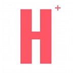

Currently studying Computer Science, Applied Mathematics and Economics at Columbia University in the City of New York. Interested in applying technology to solve problems around the world
Developed a universal searching voice assistant for the mobile reader application. Invited to return and responsible for building from scratch an intelligent microservice, which consists of a pipeline incorporating Recommender Systems, Text Classification Models and Topic Modelling Algorithms
Researched the applications and integration of Generative Adversarial Neural Networks (GAN) in mapping neuron coverage of existing neural networks. Developed a GAN and tested it’s effectiveness in analyzing existing software. Researched exact functions in the DeepExplore library that help maximize neural coverage.
Developer on the Mobile and WebApps Team of the Spectator Publishing Company Mobile responsibilities included using Stack Navigation, Redux and other tools in React Native to build, test and maintain the Spectator News Application and the Columbia Shaft Housing App. Web Application responsibilities included using React.js and Node.js to develop https://cuoracle.com.
Researched in the area of 'Identifying Typo-Squatted Domains through Natural Language Processing' under the mentorship of Kevin Borgolte, a Ph.D. Candidate. Hands-on experience as a research intern in the computer science lab. Presented a final research paper at a symposium and participated in the poster session. Earned 8 credits in INT93P - Presentation Techniques in Research and INT93R – Introduction to Research Techniques courses with a 4.0 GPA
Minor in Applied Mathematics
Final Score: 43/45 points (7 points in Math, Physics and Economics HL)
Axia is a web application that aims to make comparable analysis easier. Axia uses Natural Language Processing and Machine Learning methods to generate similarity relationships and stores them in a graph database to make it easier to perform competitive analysis, comparable valuations and benchmarking.
RESTful Api, React.js, Tensorflow, Natural Language Toolkit
HospiShare is an Android mobile application with a social objective that I launched in 2016. It seeks to connect the smart phone enabled users with other users with elderly parents. It enables users to avoid taking too many workdays off for hospital visits by connecting with users who offer to take their parents to the hospital instead. You can check the initiative out here
Android Studio, Firebase, Canvas
Galleons is an android application that scans your reciepts and classifies your expenses. It also helps you find affordable places near you based on your budget.
Android Studio, Tensorflow, Text Classification
Apart from building my programming and engineering skills, I enjoy reading, playing basketball and debating about international affairs
Otherwise, I follow many television shows, and I spend a large amount of my free time exploring the latest technology advancements in Machine Learning and Artificial Intelligence.